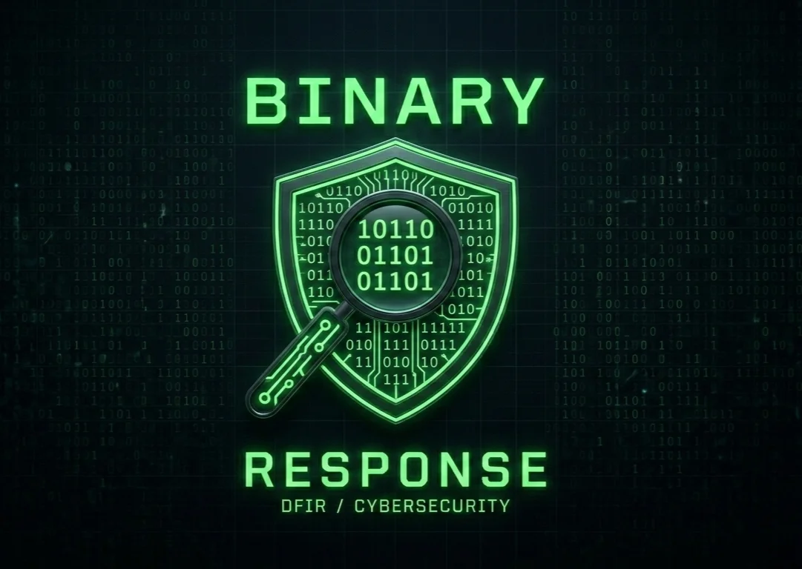

When a threat actor lists your organisation on a dark web leak site, we are already reaching out. No waiting. No sales pitch. You speak directly to senior incident responders who have contained 100+ breaches across healthcare, financial services, and manufacturing.

We detect your exposure or you call us directly — either way, we move fast. First contact to active response in under one hour.
Our 24/7 dark web monitoring flags your exposure — or you call us directly. Either way, the clock starts now.
A senior DFIR practitioner scopes your incident within the first hour. We identify the attack type, affected systems, and containment priorities before anything else.
We isolate the threat and preserve evidence simultaneously. Forensic investigation, attacker timeline reconstruction, and negotiation advisory run in parallel — not sequentially.
Clean recovery, ICO and regulatory notifications, and a post-incident report your board and insurer can act on. We fix the root cause — not patch over it.
Every minute of delay during a cyber attack increases the damage. Binary Response deploys senior DFIR (Digital Forensics & Incident Response) practitioners — not junior analysts — around the clock. We handle ransomware recovery, digital forensics, and data breach response for organisations across the UK and internationally.
Unlike firms that send junior analysts to triage, Binary Response puts senior DFIR practitioners on the phone from the first call. Our team has resolved 100+ incidents across healthcare, financial services, legal, manufacturing, and education.
We operate 24/7 because attackers don't wait for business hours. Retainer clients reach a senior practitioner in under 1 hour. Throughout the engagement, you receive regular executive briefings and detailed forensic reports.
For immediate help, contact us or call our 24/7 incident line. In a breach, every hour of delay increases the cost — we treat your time accordingly.
Incident response, forensics, and proactive security — delivered by practitioners who have contained real-world breaches.
“Ransomware hit us on a Saturday evening. Binary Response had a senior practitioner on a call within 40 minutes. Their speed and clarity under pressure prevented what could have been a catastrophic patient data exposure. We went from crisis to controlled recovery in under 72 hours.”
— Head of IT, UK Healthcare Provider
“When our production environment was encrypted, the board expected weeks of downtime. Binary Response had our manufacturing lines back within 48 hours. The forensic report they delivered gave our insurer everything they needed to process the claim without delay.”
— Operations Director, UK Manufacturing Firm
“The regulatory dimension was what worried us most — FCA reporting, ICO notification, insurer liaison. Binary Response handled all of it cleanly and on time. Their executive reporting gave our board confidence throughout, and the insurer signed off without issue.”
— CISO, UK Financial Services Company
Step-by-step guide for the first 72 hours after ransomware based on 235 real cases. What to do and what NOT to do.
2026-03-07 — 8 min read RansomwareWhat we've learned from negotiating 235 ransomware cases. Field-tested tactics that reduce demands by 63% on average.
2026-03-07 — 11 min read Digital ForensicsThe decisions you make in the first hour determine whether your forensic evidence survives. Here's how to get containment right.
2026-03-07 — 9 min read